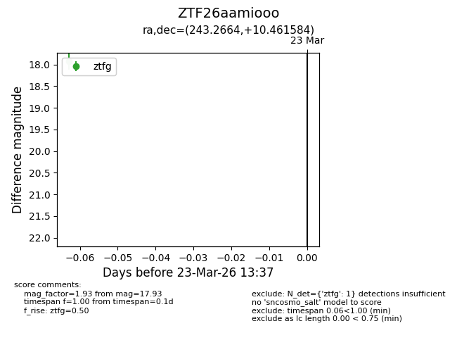
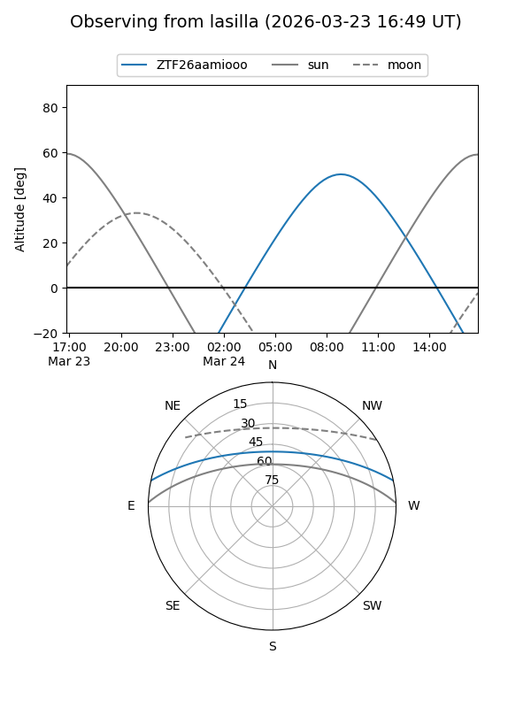
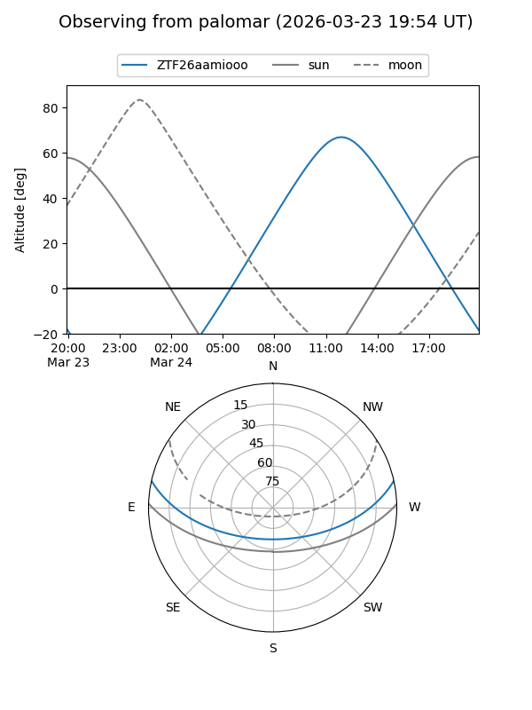

ZTF26aamiooo
Target ZTF26aamiooo at 2026-03-23 13:40
Aliases and brokers:
FINK: link
Lasair: link
ALeRCE: link
alt names
ZTF26aamiooo (ztf,fink_ztf)
Coordinates:
equatorial (ra, dec) = 243.2664,+10.46158
equatorial (HMS+DMS) = 16:13:03.92,+10:27:41.70
galactic (l, b) = (23.6253,+39.83541)
Flags:
Photometry:
last ztfg=17.93
1 ztfg detections
Lightcurve

Visibility


Additional plots